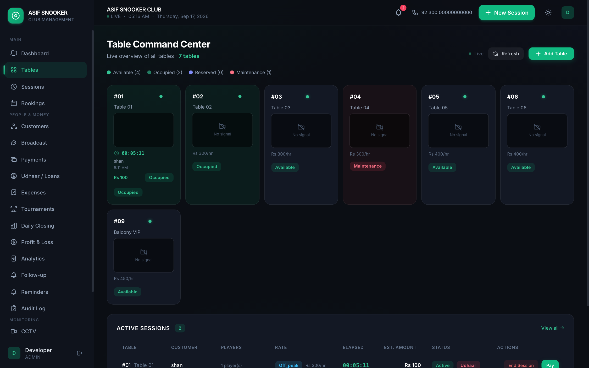
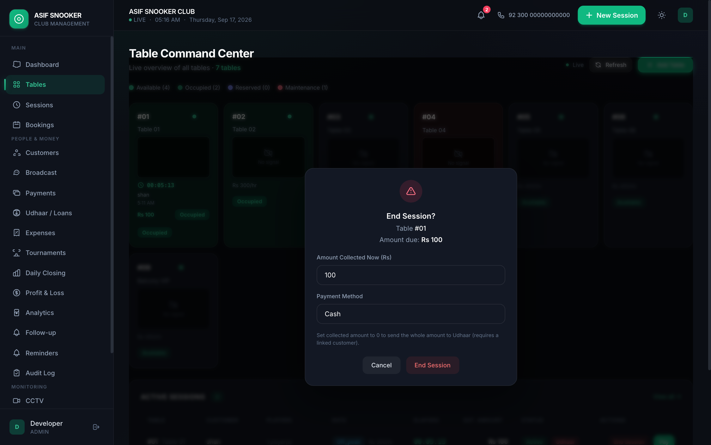
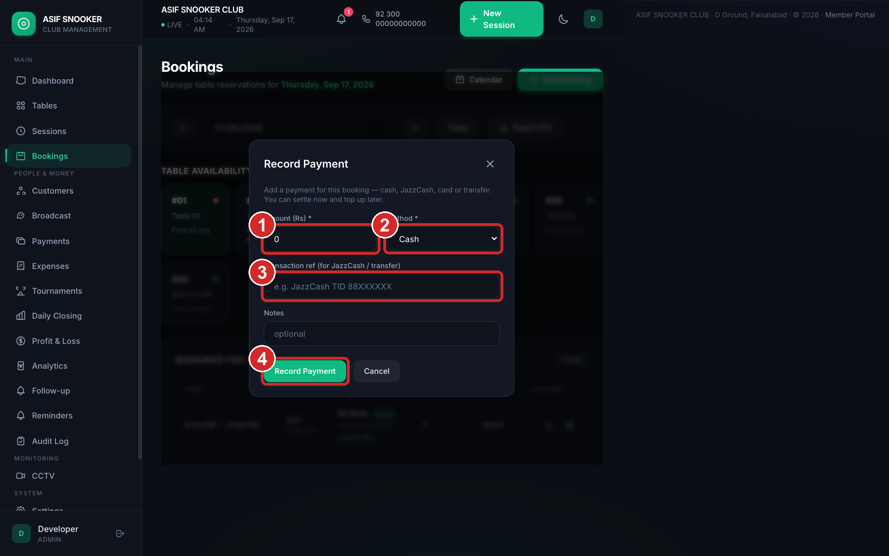
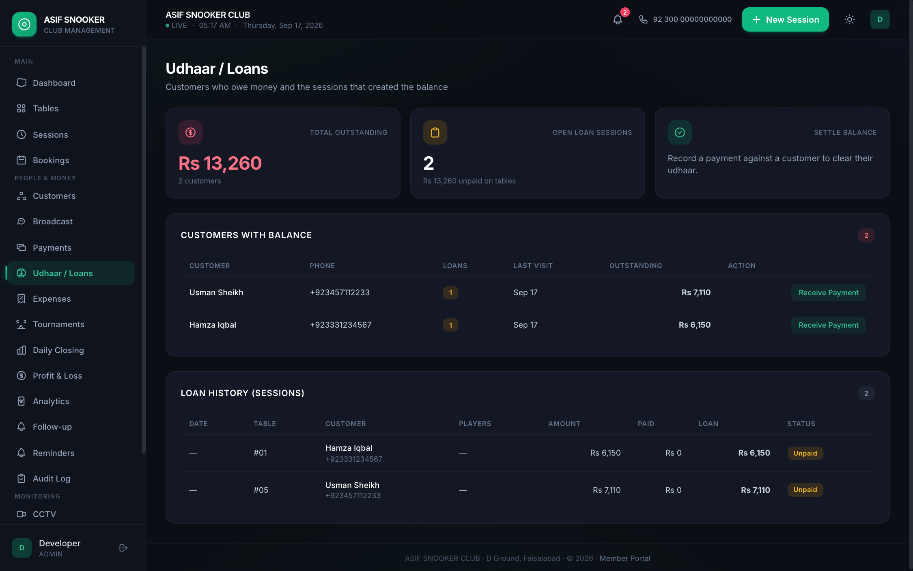

یہ خانے بھریں: ٹیبل، تاریخ، وقت، گاہک کا نام اور فون۔ آخر میں ’محفوظ‘ دبائیں۔
نئی بکنگ کا فارم
1ٹیبل چنیںTable chunen
2تاریخ چنیںDate chunen
3شروع کا وقت لکھیںStart time
4ختم ہونے کا وقت لکھیںEnd time
5جیتنے/ہارنے والے کے نام لکھیںWinner / loser
6طے شدہ رقم اور طریقہ چنیں، پھر ’محفوظ‘ دبائیںCharge + method, Save
ASIF SNOOKER CLUBآسان رہنما — قدم 3
4
Start Session
ٹیبل پر سیشن شروع کریں
ٹیبل پر ماؤس لیں — ’اسٹارٹ‘ بٹن آئے گا، اس پر کلک کریں۔
Table par mouse le jayen — “Start” button aayega.

Tables صفحہ — سرخ ① خالی ٹیبل، ② چل رہا ٹیبل
سبز رنگ = ٹیبل خالی ہے۔ سرسبز (بھرا) = سیشن چل رہا ہے۔ جامنی = ٹیبل بُک ہے۔
ASIF SNOOKER CLUBآسان رہنما — قدم 4
4
Session Details
کھلاڑیوں کے نام اور پیسے لکھیں
جیتنے والے اور ہارنے والے کے نام لکھیں، گاہک کا نام اور فون لکھیں، پھر چنیں کہ پیسہ گھڑی سے بنے گا یا طے شدہ رقم ہے۔ آخر میں ’اسٹارٹ سیشن‘ دبائیں۔
سیشن شروع کرنے کا فارم
1جیتنے والے کا نام لکھیںWinner ka naam
2ہارنے والے کا نام لکھیںLoser ka naam
3گاہک کا نام اور فون لکھیںClient name + phone
4چنیں: گھڑی (Timer) یا طے شدہ رقم (Fixed)Charge mode
5’اسٹارٹ سیشن‘ دبائیںStart Session
طے شدہ رقم (Fixed Amount) — ابھی پیسہ لیں (Pay Now) یا بعد میں (Pay Later / ادھار)
اگر طے شدہ رقم ہے اور گاہک ابھی پیسے نہیں دے رہا تو Pay Later چنیں اور فون نمبر ضرور لکھیں — ورنہ ادھار کا حساب نہیں رہے گا۔
ASIF SNOOKER CLUBآسان رہنما — قدم 4
5
During Session
سیشن چل رہا ہے
وقت اور پیسہ خود بڑھتا رہتا ہے۔ چائے یا اضافی چیز ہو تو ’چارج‘ دبائیں، اور کام کے بعد ’اینڈ‘ سے سیشن بند کریں۔
چل رہے سیشن — ① سیشن کارڈ، ② بند کرنے کا بٹن
1سیشن اور گھڑی دیکھیںSession + timer dekhen
2چائے/اضافی چیز ہو تو ’چارج‘، ورنہ ’اینڈ‘ دبائیںCharge ya End
دھیان رکھیں: سیشن بند کرنے سے پہلے گاہک سے کہہ دیں کہ وقت پورا ہو گیا ہے۔
ASIF SNOOKER CLUBآسان رہنما — قدم 5
5
End Session
سیشن بند کریں اور پیسے لیں
’اینڈ‘ دبائیں — سکرین پر کل رقم آ جائے گی۔ ابھی جتنے پیسے ملے وہ لکھیں اور طریقہ چنیں (کیش / جاز کیش / آن لائن)۔ باقی رقم خود بخود ادھار میں چلی جائے گی۔

سیشن بند کرنے کا فارم — کل رقم، وصول رقم اور طریقہ
1کل رقم دیکھیںTotal amount dekhen
2ابھی ملنے والی رقم لکھیں (پورا نہ ملے تو کم لکھیں)Received amount
3طریقہ چنیں (کیش / جاز کیش / آن لائن)Payment method
4’سیشن بند کریں‘ دبائیںEnd Session dabayen
پورا پیسہ نہ ملے تو گھبرائیں نہیں — باقی رقم گاہک کے ادھار میں محفوظ ہو جائے گی، بعد میں وصول کر لیں۔
ASIF SNOOKER CLUBآسان رہنما — قدم 5
6
Payment
پیسے لیں اور پیمنٹ لکھیں
گاہک سے پیسے لیں۔ رقم اور طریقہ (کیش / جاز کیش / بینک) لکھیں، پھر ’ریکارڈ‘ دبائیں۔

پیمنٹ لکھنے کا فارم
1رقم لکھیںAmount
2طریقہ چنیں (کیش وغیرہ)Method
3نوٹ لکھیں (اگر ضروری ہو)Note / reference
4’ریکارڈ‘ دبائیںRecord dabayen
نقدی لیں تو پیمنٹ ضرور لکھیں — تاکہ دن کے آخر میں حساب نہ پھنسے۔
ASIF SNOOKER CLUBآسان رہنما — قدم 6
+
Udhaar / Loans
ادھار اور باقی پیسہ
جس گاہک نے پورے پیسے نہیں دیے، اُس کا باقی پیسہ ’ادھار‘ میں آ جاتا ہے۔ ’ادھار‘ والے صفحے پر دیکھیں کہ کس نے کتنا دینا ہے۔

ادھار کا صفحہ — کل باقی رقم، گاہک اور واپسی کی تفصیل